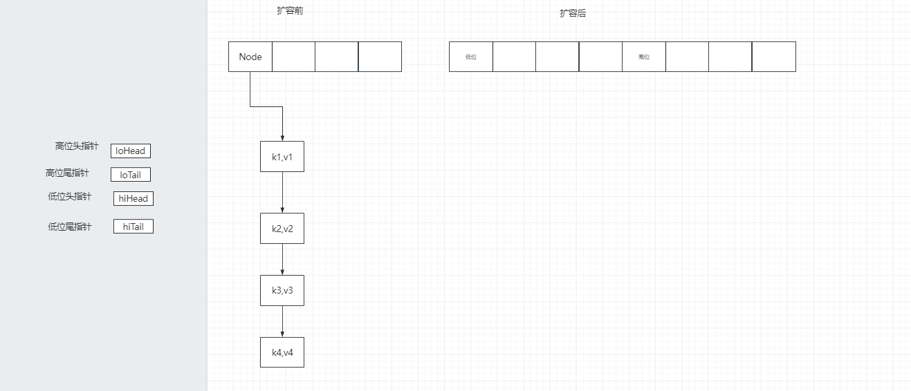
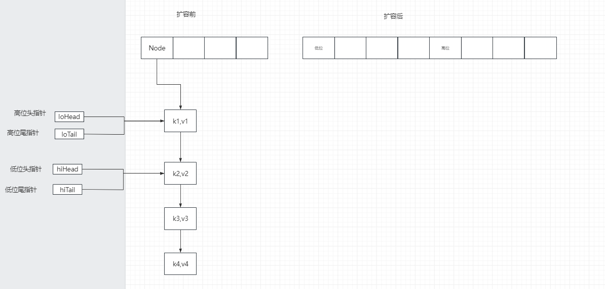
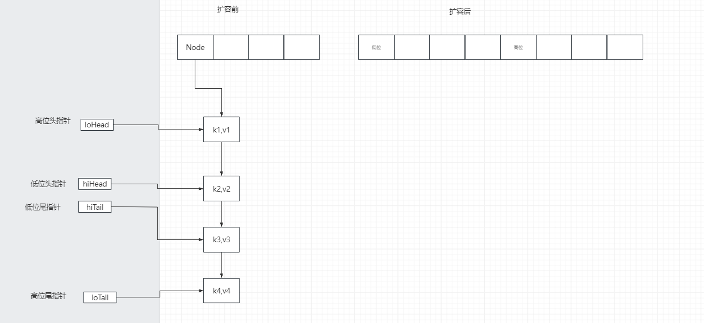
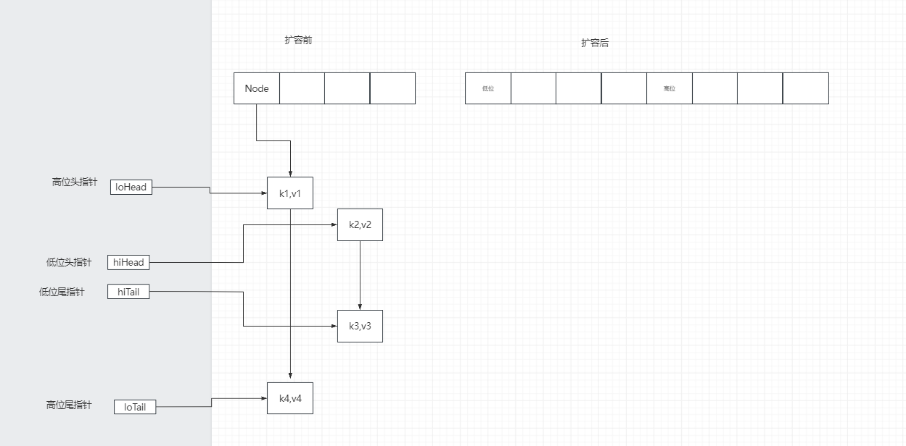
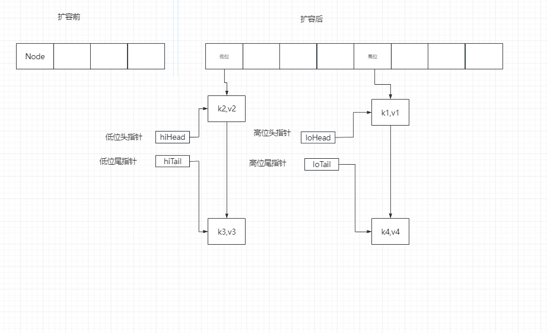

Map HashMap jdk1.8 底层用的数组+链表/红黑树
1.新建无参的hashMap —>new HashMap<>() 如果不指定大小HashMap<String ,String> map = new HashMap<>();
public HashMap () { this .loadFactor = DEFAULT_LOAD_FACTOR; }
2.新建有参的hashMap传入13 public HashMap (int initialCapacity) { this (initialCapacity, DEFAULT_LOAD_FACTOR); } public HashMap (int initialCapacity, float loadFactor) { if (initialCapacity < 0 ) throw new IllegalArgumentException ("Illegal initial capacity: " + initialCapacity); if (initialCapacity > MAXIMUM_CAPACITY) initialCapacity = MAXIMUM_CAPACITY; if (loadFactor <= 0 || Float.isNaN(loadFactor)) throw new IllegalArgumentException ("Illegal load factor: " + loadFactor); this .loadFactor = loadFactor; this .threshold = tableSizeFor(initialCapacity); } static final int tableSizeFor (int cap) { int n = cap - 1 ; n |= n >>> 1 ; n |= n >>> 2 ; n |= n >>> 4 ; n |= n >>> 8 ; n |= n >>> 16 ; return (n < 0 ) ? 1 : (n >= MAXIMUM_CAPACITY) ? MAXIMUM_CAPACITY : n + 1 ; }
3.put(key,value)和hash(key) public V put (K key, V value) { return putVal(hash(key), key, value, false , true ); } static final int hash (Object key) { int h; return (key == null ) ? 0 : (h = key.hashCode()) ^ (h >>> 16 ); }
4.putVal(hash, key, value, onlyIfAbsent, evict) static class Node <K,V> implements Map .Entry<K,V> { final int hash; final K key; V value; Node<K,V> next; final V putVal (int hash, K key, V value, boolean onlyIfAbsent,boolean evict) { Node<K,V>[] tab; Node<K,V> p; int n, i; if ((tab = table) == null || (n = tab.length) == 0 ) n = (tab = resize()).length; if ((p = tab[i = (n - 1 ) & hash]) == null ) tab[i] = newNode(hash, key, value, null ); else { Node<K,V> e; K k; if (p.hash == hash && ((k = p.key) == key || (key != null && key.equals(k)))) e = p; else if (p instanceof TreeNode) e = ((TreeNode<K,V>)p).putTreeVal(this , tab, hash, key, value); else { for (int binCount = 0 ; ; ++binCount) { if ((e = p.next) == null ) { p.next = newNode(hash, key, value, null ); if (binCount >= TREEIFY_THRESHOLD - 1 ) treeifyBin(tab, hash); break ; } if (e.hash == hash && ((k = e.key) == key || (key != null && key.equals(k)))) break ; p = e; } } if (e != null ) { V oldValue = e.value; if (!onlyIfAbsent || oldValue == null ) e.value = value; afterNodeAccess(e); return oldValue; } } ++modCount; if (++size > threshold) resize(); afterNodeInsertion(evict); return null ; }
5.数组扩容 扩容前
15： 0000 0000 0000 1111 15： 0000 0000 0000 1111
hash： 0100 0000 1001 0101 hash： 0100 0000 1000 0101 //假如hash的第五未变成了0
&： 0000 0000 0000 0101 &： 0000 0000 0000 0101
扩容后
31: 0000 0000 0001 1111 31: 0000 0000 0001 1111
hash: 0100 0000 1001 0101 hash: 0100 0000 1000 0101
&: 0000 0000 0001 0101 &: 0000 0000 0000 0101 //等于原数组
可以得出以下规律
新数组下标 = 老下标 + 老数组的长度 (当)
新数组下标 = 老下标
该源码用到了一个简便判断方法： hash & oldCap(原来数组的长度) 如果等于0，就在低位，否则就在高位。
链表的转移—->之前

链表的转移—->判断出每个节点是在低位还是高位

链表的转移—->判断出每个节点是在低位还是高位，尾指针移动

链表的转移—->判断出每个节点是在低位还是高位，断开尾指针指向节点的next

链表的转移—->转移

final Node<K,V>[] resize() { Node<K,V>[] oldTab = table; int oldCap = (oldTab == null ) ? 0 : oldTab.length; int oldThr = threshold; int newCap, newThr = 0 ; if (oldCap > 0 ) { if (oldCap >= MAXIMUM_CAPACITY) { threshold = Integer.MAX_VALUE; return oldTab; } else if ((newCap = oldCap << 1 ) < MAXIMUM_CAPACITY && oldCap >= DEFAULT_INITIAL_CAPACITY) newThr = oldThr << 1 ; } else if (oldThr > 0 ) newCap = oldThr; else { newCap = DEFAULT_INITIAL_CAPACITY; newThr = (int )(DEFAULT_LOAD_FACTOR * DEFAULT_INITIAL_CAPACITY); } if (newThr == 0 ) { float ft = (float )newCap * loadFactor; newThr = (newCap < MAXIMUM_CAPACITY && ft < (float )MAXIMUM_CAPACITY ? (int )ft : Integer.MAX_VALUE); } threshold = newThr; @SuppressWarnings({"rawtypes","unchecked"}) Node<K,V>[] newTab = (Node<K,V>[])new Node [newCap]; table = newTab; if (oldTab != null ) { for (int j = 0 ; j < oldCap; ++j) { Node<K,V> e; if ((e = oldTab[j]) != null ) { oldTab[j] = null ; if (e.next == null ) newTab[e.hash & (newCap - 1 )] = e; else if (e instanceof TreeNode) ((TreeNode<K,V>)e).split(this , newTab, j, oldCap); else { Node<K,V> loHead = null , loTail = null ; Node<K,V> hiHead = null , hiTail = null ; Node<K,V> next; do { next = e.next; if ((e.hash & oldCap) == 0 ) { if (loTail == null ) loHead = e; else loTail.next = e; loTail = e; } else { if (hiTail == null ) hiHead = e; else hiTail.next = e; hiTail = e; } } while ((e = next) != null ); if (loTail != null ) { loTail.next = null ; newTab[j] = loHead; } if (hiTail != null ) { hiTail.next = null ; newTab[j + oldCap] = hiHead; } } } } } return newTab; } final void split (HashMap<K,V> map, Node<K,V>[] tab, int index, int bit) { TreeNode<K,V> b = this ; TreeNode<K,V> loHead = null , loTail = null ; TreeNode<K,V> hiHead = null , hiTail = null ; int lc = 0 , hc = 0 ; for (TreeNode<K,V> e = b, next; e != null ; e = next) { next = (TreeNode<K,V>)e.next; e.next = null ; if ((e.hash & bit) == 0 ) { if ((e.prev = loTail) == null ) loHead = e; else loTail.next = e; loTail = e; ++lc; } else { if ((e.prev = hiTail) == null ) hiHead = e; else hiTail.next = e; hiTail = e; ++hc; } } if (loHead != null ) { if (lc <= UNTREEIFY_THRESHOLD) tab[index] = loHead.untreeify(map); else { tab[index] = loHead; if (hiHead != null ) loHead.treeify(tab); } } if (hiHead != null ) { if (hc <= UNTREEIFY_THRESHOLD) tab[index + bit] = hiHead.untreeify(map); else { tab[index + bit] = hiHead; if (loHead != null ) hiHead.treeify(tab); } } }
6.链表树化（既是红黑树又是双向链表） 双向链表更加方便删除节点
final void treeifyBin (Node<K,V>[] tab, int hash) { int n, index; Node<K,V> e; if (tab == null || (n = tab.length) < MIN_TREEIFY_CAPACITY) resize(); else if ((e = tab[index = (n - 1 ) & hash]) != null ) { TreeNode<K,V> hd = null , tl = null ; do { TreeNode<K,V> p = replacementTreeNode(e, null ); if (tl == null ) hd = p; else { p.prev = tl; tl.next = p; } tl = p; } while ((e = e.next) != null ); if ((tab[index] = hd) != null ) hd.treeify(tab); } }
7.如果放入元素时发现Node数组上，是TreeNode类型的节点就调用putTreeVal方法 final TreeNode<K,V> putTreeVal (HashMap<K,V> map, Node<K,V>[] tab, int h, K k, V v) { Class<?> kc = null ; boolean searched = false ; TreeNode<K,V> root = (parent != null ) ? root() : this ; for (TreeNode<K,V> p = root;;) { int dir, ph; K pk; if ((ph = p.hash) > h) dir = -1 ; else if (ph < h) dir = 1 ; else if ((pk = p.key) == k || (k != null && k.equals(pk))) return p; else if ((kc == null && (kc = comparableClassFor(k)) == null ) || (dir = compareComparables(kc, k, pk)) == 0 ) { if (!searched) { TreeNode<K,V> q, ch; searched = true ; if (((ch = p.left) != null && (q = ch.find(h, k, kc)) != null ) || ((ch = p.right) != null && (q = ch.find(h, k, kc)) != null )) return q; } dir = tieBreakOrder(k, pk); } TreeNode<K,V> xp = p; if ((p = (dir <= 0 ) ? p.left : p.right) == null ) { Node<K,V> xpn = xp.next; TreeNode<K,V> x = map.newTreeNode(h, k, v, xpn); if (dir <= 0 ) xp.left = x; else xp.right = x; xp.next = x; x.parent = x.prev = xp; if (xpn != null ) ((TreeNode<K,V>)xpn).prev = x; moveRootToFront(tab, balanceInsertion(root, x)); return null ; } } }